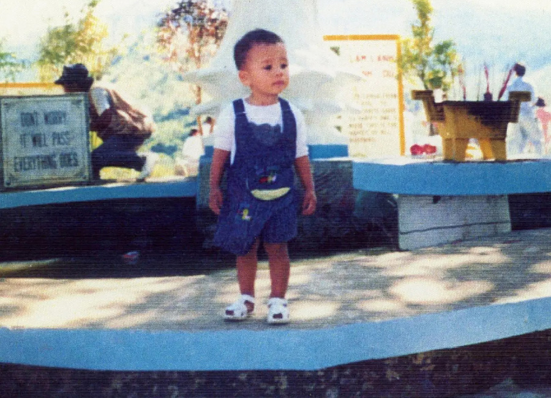

Ocean vuong
Biography
Childhood and Education
After leaving Vietnam at the age of two, he grew up in a working-class family marked by the experiences of war and exile. His mother, an illiterate seamstress, and his grandmother, a former rice farmer, profoundly shaped his imagination and relationship with language. Vuong was the first in his family to learn how to read and write.
He studied initially at the University of Hartford, later earning a B.A. in English from Brooklyn College, followed by an M.F.A. in creative writing at New York University.
Early Writing Years
His first poems appeared in small literary journals, but it was with the collection Night Sky with Exit Wounds (2016) that he gained international recognition. His poetry explores themes of the Vietnam War’s legacy, migration, queer identity, and the fragility of language.
In 2019, he published his debut novel, On Earth We’re Briefly Gorgeous, widely acclaimed by critics. Written as a letter to his illiterate mother, the book intertwines autobiography, family history, and reflections on sexuality, race, and inherited trauma.
In 2022, he released Time Is a Mother, a poetry collection shaped by mourning his mother’s death and an even more intimate exploration of grief and survival.
Ocean Vuong currently teaches literature and creative writing at the University of Massachusetts Amherst.